Las secciones 3 a 15 van en el mismo orden del menú de la aplicación, una por cada opción. Las marcadas como Administrador solo las ve el perfil de administrador de bodega.
1Antes de empezarTodos
2Ingreso a la plataformaTodos
3Inicio menú: InicioTodos
4Pedidos menú: PedidosTodos
5Conteo menú: ConteoTodos
6Legalización menú: LegalizaciónTodos
7Bodegas menú: BodegasTodos
8Auditoría menú: AuditoríaAdministrador
9Reportes menú: ReportesAdministrador
10Panel menú: PanelAdministrador
11Ajustes menú: AjustesAdministrador
12Ayuda menú: AyudaTodos
13Mensajes menú: MensajesTodos
14Mi perfil menú: Mi perfilTodos
15Cerrar sesión menú: Cerrar sesiónTodos
16Preguntas frecuentesTodos
1Antes de empezar
Qué es CuentaVoz, para qué sirve y qué necesita para usarlo.
CuentaVoz reemplaza la planilla de papel del conteo de inventario. En vez de anotar y luego digitar, usted dice en voz alta lo que está contando y el sistema lo registra en el momento, valida que la cantidad tenga sentido y deja el consolidado listo para cargar a My Inventory.
Los dos perfiles
Perfil
Qué puede hacer
Auxiliar de inventarios
Contar por voz las bodegas que tenga asignadas, hacer pedidos al almacén, legalizar el servicio del turno y consultar existencias.
Administrador de bodega
Todo lo anterior, más auditar y cerrar bodegas con doble firma, aprobar productos, bodegas y cuentas nuevas, ver el panel gerencial y generar los reportes.
Cómo abrir CuentaVoz
No hay nada que instalar: CuentaVoz se abre en el navegador, como cualquier página.
Abra el navegadorChrome, Edge o Safari, en la tableta, el computador o el celular.
Escriba la direccióncuentavoz.onrender.com y toque Entrar. Guárdela en favoritos: es la misma todos los días.
Déjela a la manodesde el menú del navegador puede usar Agregar a la pantalla de inicio (celular o tableta) o Instalar (computador). Queda con su ícono, como una aplicación más, y abre directo en el ingreso.
Permita el micrófonola primera vez que dicte, el navegador pregunta si CuentaVoz puede usar el micrófono. Responda Permitir: sin eso no se puede contar por voz.
Si el servidor tarda en responder la primera vez
Puede demorarse hasta un minuto en abrir si nadie lo ha usado en un rato. La pantalla se lo avisa. No es su conexión y no hay que recargar: espere.
Qué necesita
Una tableta, computador o celular con navegador web actualizado.
Conexión a internet para el reconocimiento de voz. Sin señal el conteo continúa por escrito y se sincroniza solo (sección 5).
Una cuenta propia: se crea en un minuto desde la misma pantalla de ingreso (sección 2).
Lo primero que debe saber
CuentaVoz siempre confirma antes de guardar. Nada queda registrado sin que usted lo apruebe, y ningún dato se sobrescribe: cuando corrige una cantidad, el valor anterior se conserva en el registro de trazabilidad.
2Ingreso a la plataforma
Crear su cuenta, entrar por primera vez y recuperar la clave.
Iniciar sesión
Escriba su usuarioel que le dieron o el que eligió al crear la cuenta. No es el correo.
Mire el perfil que aparecedebajo del campo sale Perfil detectado con Auxiliar de inventarios o Administrador de bodega. Si dice algo distinto a lo que usted es, avísele a su administrador antes de seguir.
Escriba su clavesi se equivoca, CuentaVoz se lo dice debajo del campo exacto que debe corregir, no con un mensaje suelto.
Toque «Entrar»y espere. La primera vez del día puede tardar un momento.
¿Todavía no tiene cuenta?
Créela usted mismo desde esta misma pantalla, con Crear una cuenta — es el paso siguiente. No hace falta que nadie se la cree ni que pida permiso: la cuenta queda como auxiliar de inventarios, y si le corresponde otro perfil, su administrador se lo cambia después desde Ajustes › Gestión de usuarios.
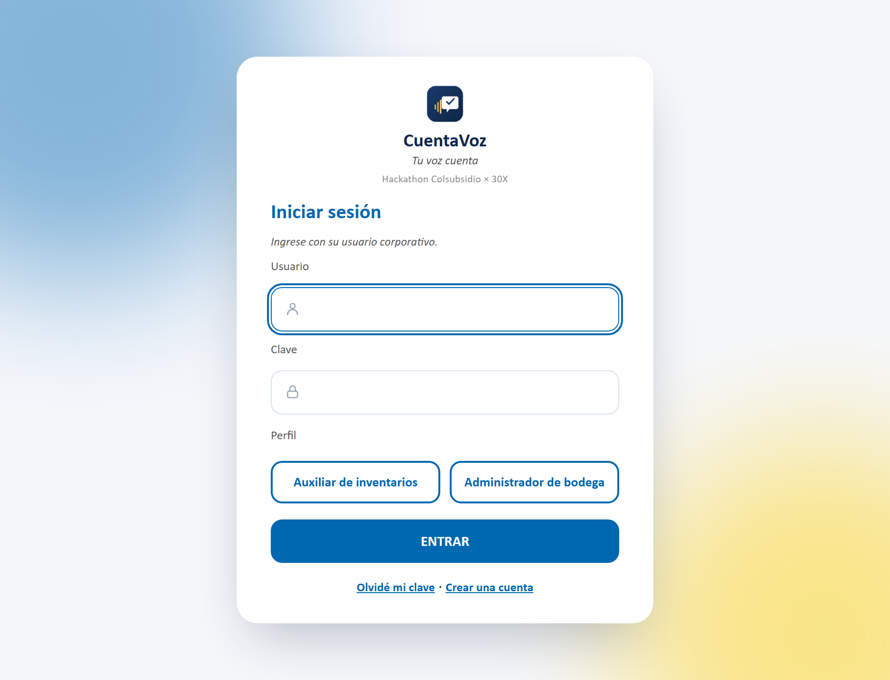
Figura 1Pantalla de ingreso. El perfil se detecta solo al escribir el usuario.
Crear una cuenta
Toque «Crear una cuenta»en la parte inferior de la pantalla de ingreso, al lado de «Olvidé mi clave».
Llene sus datosnombre completo, correo corporativo, usuario, y la clave dos veces. El código de empleado es opcional: puede dejarlo vacío y completarlo después desde Mi perfil.
Mire el marcador de la clavedebajo del campo hay cuatro requisitos que se ponen en verde a medida que escribe. Mientras alguno siga en gris, el formulario no deja continuar.
Toque «Crear cuenta»CuentaVoz envía un código de seis dígitos al correo que escribió. Puede tardar un momento; revise también la carpeta de correo no deseado.
Escriba el códigoen la pantalla «Confirmar correo». Esto verifica que la dirección es suya de verdad.
Decida sobre la verificación en dos pasosal terminar se le ofrece activarla. Puede responder «Ahora no» y activarla más adelante desde Mi perfil.
Los cuatro requisitos de la clave
Al menos 8 caracteres, una letra mayúscula, una letra minúscula y un número. No se exige ningún símbolo. Son exactamente los cuatro que se ven en pantalla: no hay requisitos ocultos que aparezcan solo al enviar el formulario.
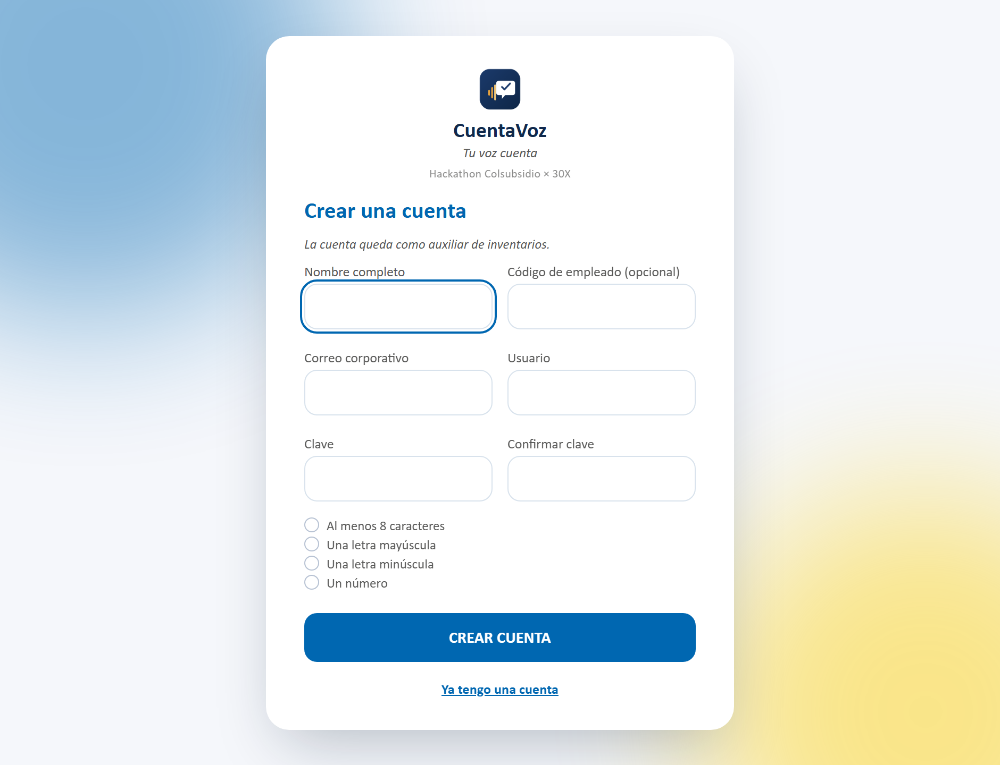
Figura 2Formulario de registro. La cuenta queda como auxiliar hasta que el administrador defina el perfil.
Verificación en dos pasos
Es opcional, y muy recomendable para los administradores de bodega. CuentaVoz se la ofrece al terminar el registro, y puede activarla o quitarla después desde Mi perfil › Seguridad de la cuenta. Al activarla, además de la clave se le pedirá un código de seis dígitos que genera una aplicación autenticadora en su celular.
Instale una app autenticadoraGoogle Authenticator, Microsoft Authenticator o similar, en su celular.
Escanee el código QRque aparece en pantalla. Si el celular no puede escanear, toque Mostrar llave secreta y escriba esa llave a mano en la aplicación.
Ingrese el códigolos seis dígitos que muestra la aplicación en ese momento, y toque Activar.
Si prefiere dejarlo para después, responda Ahora no: la cuenta queda igual de funcional.
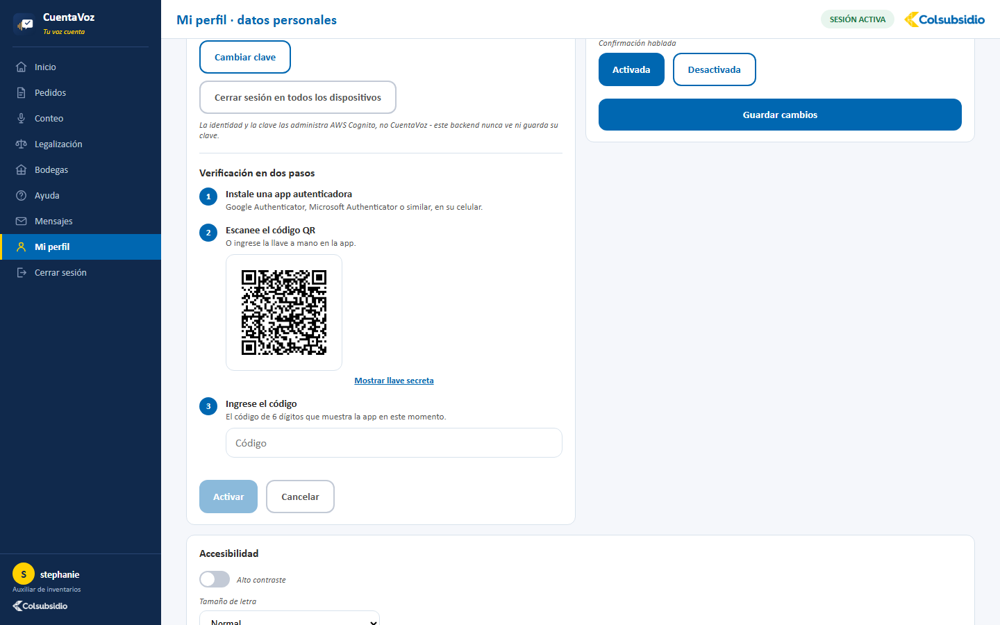
Figura 3Verificación en dos pasos. La misma pantalla sale al terminar el registro y en Mi perfil.
Si cambia de celular
Desactive la verificación en dos pasos desde Mi perfilantes de dejar el equipo anterior, y vuelva a activarla en el nuevo. El código lo genera la aplicación del celular, no CuentaVoz: si pierde el acceso a esa aplicación sin desactivarla antes, necesitará que un administrador le ayude a recuperar la cuenta.
Olvidé mi clave
Se resuelve sola, sin llamar a soporte y sin que nadie más tenga que ver su clave.
Toque «Olvidé mi clave»debajo del botón Entrar.
Escriba su usuariono el correo: el mismo usuario con el que entra. El código se manda a la dirección que ya estaba registrada, así que nadie puede desviarlo a otro correo.
Espere el códigoson seis dígitos y llegan al correo registrado. Si el servidor estaba en reposo, la pantalla se lo avisa y puede tardar hasta un minuto.
Escriba el código y la clave nuevados veces, con los mismos cuatro requisitos del registro.
Vuelva a entraral confirmar, CuentaVoz lo devuelve a la pantalla de ingreso para que entre con la clave nueva.
Si no le llega el código
Revise el correo no deseado. Si su usuario no tiene correo registrado, o está mal escrito, el código no puede llegar a ninguna parte: escríbale entonces a su administrador de bodega, que puede corregirle la dirección desde Ajustes › Gestión de usuarios.
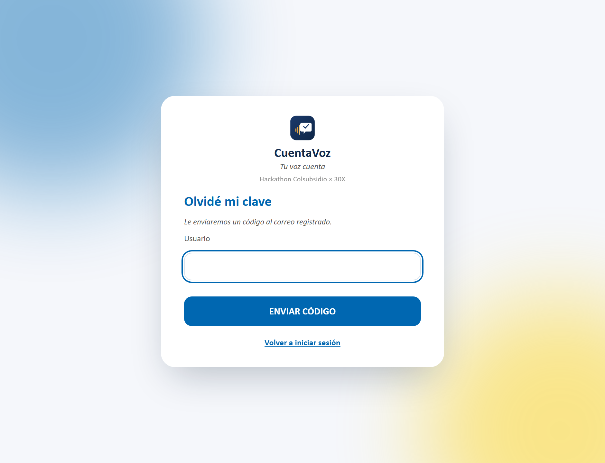
Figura 4Recuperación de clave por correo.
3Inicio
Su resumen del día y el punto de partida de todo el trabajo.
Al entrar, CuentaVoz le abre el recorrido en video de su perfil: narrado, con un ejemplo de cada pantalla — 5:05 para auxiliares de inventarios, 7:20 para administradores de bodega. Puede pausarlo o cerrarlo y seguir después, y volver a verlo cuando quiera desde Ayuda › Ver el recorrido en video. Si marca No mostrar este video automáticamente, deja de abrirse solo en los próximos ingresos.
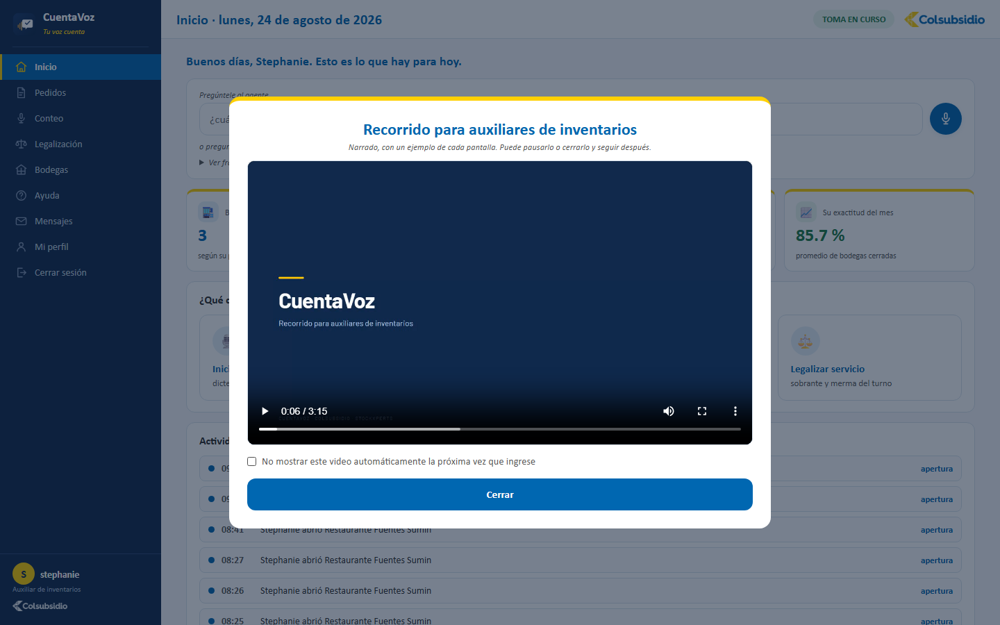
Figura 5El recorrido en video de su perfil, al ingresar.
Ya en Inicio verá cuatro indicadores del día — bodegas asignadas, referencias contadas, alertas por revisar y su exactitud del mes. Abajo, la actividad reciente de la operación: quién hizo qué y a qué hora.
Lo primero que verá
Se abre el recorrido en videosolo. Puede verlo entero, pausarlo o cerrarlo — no se pierde: queda en Ayuda › Ver el recorrido en video.
Cierre el videocon el botón Cerrar. Si no quiere que se abra solo cada vez, marque antes la casilla de abajo.
Mire los cuatro indicadoresle dicen cómo va su día antes de tocar nada.
Elija por dónde empezarcon uno de los botones grandes del centro, o con el menú de la izquierda.
Por dónde empezar
En la mitad de la pantalla hay cuatro botones grandes. Son atajos: llevan a lo mismo que el menú de la izquierda, pero sin buscarlo.
Botón
A dónde lo lleva
Quién lo ve
Iniciar un conteo
A Conteo, a elegir la bodega y empezar a dictar.
Todos
Ver el tablero
A Bodegas, al estado de todas las zonas.
Todos
Hacer un pedido
A Pedidos, a decir el plato y las porciones.
Auxiliar
Legalizar servicio
A Legalización, a cerrar el turno.
Auxiliar
Continuar auditoría
A Auditoría, al recuento y las aprobaciones.
Administrador
Generar reporte
A Reportes, al consolidado del día.
Administrador
Si es su primer día y no sabe por dónde arrancar: Iniciar un conteo. Es la tarea para la que existe la plataforma, y está explicada paso a paso en la sección 5.
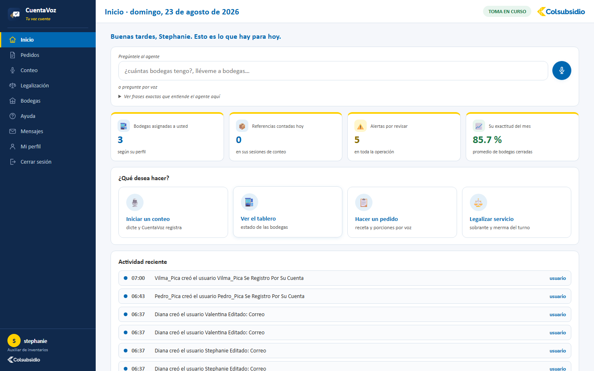
Figura 6Inicio. El cuadro superior permite preguntarle al agente por voz o por escrito desde cualquier pantalla.
4Pedidos
Decir el plato y las porciones, y que la plataforma calcule qué falta pedir.
Elija el platoentre a Pedidos y selecciónelo del catálogo, o dígalo: hoy preparamos cincuenta ajiacos.
Confirme las porcionesCuentaVoz pregunta cuántas son si no lo dijo antes.
Revise el cálculoverá, por insumo, cuánto se necesita, cuánto hay y cuánto falta.
Envíe el pedidoqueda pendiente de aprobación del administrador y usted recibe un recibo con el número del pedido.
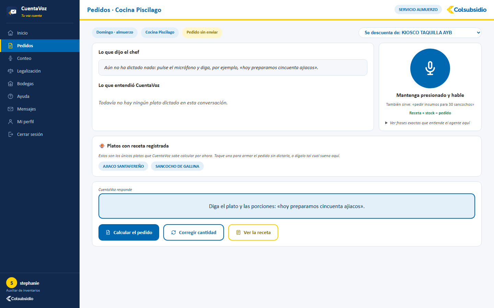
Figura 7Pedidos. El cálculo se hace contra el stock en vivo de la bodega.
5Conteo
El corazón de la toma: dictar, confirmar, corregir — y seguir contando aunque se caiga la señal.
Abra la bodegaentre a Conteo y elija la bodega, o dígalo: iniciar conteo en almacén de suministros. Solo aparecen las bodegas que tiene asignadas.
Dicte el artículo y la cantidadtoque el micrófono y hable con naturalidad: arroz veinte kilos o tres tablas para picar blancas.
ConfirmeCuentaVoz repite lo que entendió. Responda sí para guardar o no para repetirlo.
Corrija cuando haga faltadiga corregir y luego el valor correcto. El dato anterior no se borra: queda en la trazabilidad.
Continúe con la siguiente referenciahasta terminar la bodega. El avance se ve en todo momento en la parte superior.
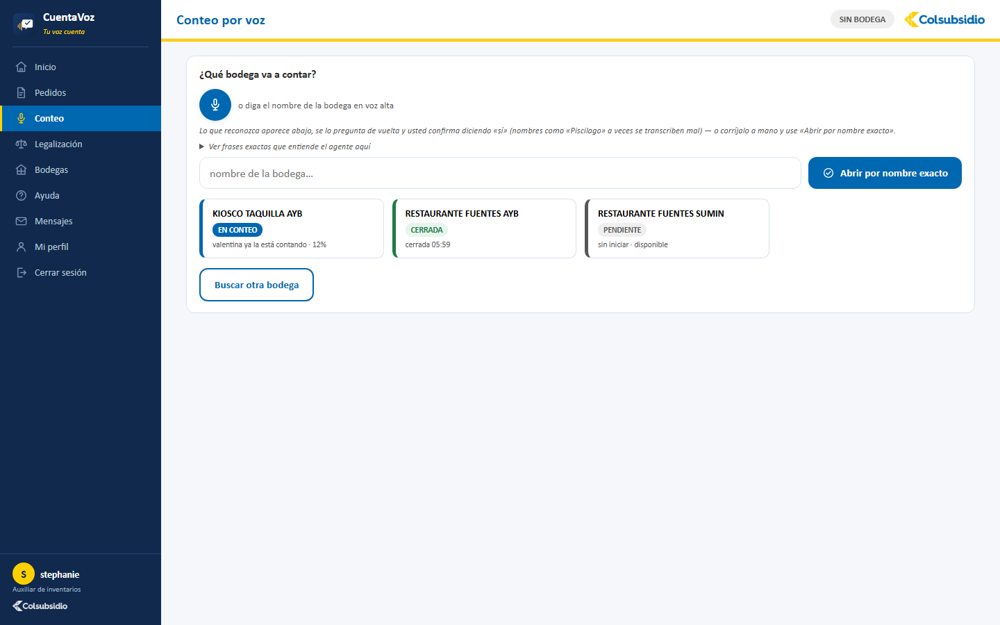
Figura 8Conteo. El botón Teclado permite escribir en vez de hablar, sin salir del flujo.
Los otros tres botones del conteo
Botón
Para qué
Corregir
Cambia la cantidad de lo último que se guardó. También sirve decirlo: corregir, son nueve.
Teclado
Escribir en vez de hablar. Es el respaldo cuando hay ruido, cuando la voz no entiende o cuando no hay señal.
Pedir ayuda
Le pregunta al agente sobre lo que tiene en pantalla, sin salir del conteo.
Cómo se termina la bodega
Su parte termina cuando usted firma. Esa firma es la primera de las dos que exige el cierre: la segunda la pone el administrador después de auditar.
Cuente hasta que el avance lo digaarriba se ve Avance: 12 de 133. Cuando llegue al total, terminó de contar.
Toque «Terminar y firmar mi conteo»abajo, en su propia fila. Le va a preguntar si está seguro, con el nombre de la bodega y cuántas referencias lleva.
Confirmela bodega pasa a auditoría. Desde ese momento ya no puede agregar ni corregir artículos, así que firme solo cuando de verdad haya terminado.
Avísele al administradorél la audita y la cierra con doble firma (sección 8).
¿Y si todavía no quiere firmar?
Entonces no firme. Puede irse a otra pantalla o cerrar sesión: lo contado ya está guardado y la bodega queda en conteo, esperándolo. El botón de firmar solo se activa cuando lleva al menos un artículo contado.
Si tiene que parar a mitad de camino
No pasa nada y no hay que hacer nada especial. Cada renglón se guardó cuando usted lo confirmó. Al volver a entrar, la bodega aparece con el aviso usted la dejó a medias y el avance donde iba.
Cuando el sistema le pregunta algo
Situación
Qué hace CuentaVoz
Cantidad fuera de lo esperado
Avisa cuánto esperaba el sistema y le pide confirmar. Si el número es correcto, confírmelo: queda marcado para revisión del administrador.
Nombre ambiguo
Muestra las opciones parecidas del catálogo para que elija la correcta.
Producto que no existe
Ofrece crearlo. Queda pendiente de aprobación del administrador y usted sigue contando sin interrupciones.
Unidad distinta
Avisa si dicta litros para algo que se maneja en kilos, antes de guardar.
Recomendación de uso
Diga la cantidad y la unidad juntas y en el mismo orden siempre — producto, número, unidad. Es la forma que el agente interpreta con mayor precisión, sobre todo en bodegas con ruido de fondo.
Trabajar sin conexión
El conteo no se detiene. CuentaVoz cambia a un formulario escrito y guarda cada registro en el propio equipo. Cuando vuelve la señal, sincroniza solo, en orden y sin duplicar nada.
Un aviso amarillo con el número de registros pendientes se ve en la barra lateral, en cualquier pantalla en la que esté trabajando.
Ese contador baja solo a medida que la sincronización avanza. Cuando desaparece, todo quedó registrado en el servidor.
Si un registro falla, la sincronización se detiene ahí y conserva el resto: nunca se pierde trabajo ya capturado.
Tenga en cuenta
El reconocimiento de voz del navegador sí necesita internet. Sin señal, el camino confiable es el teclado, no el dictado. Los pedidos tampoco se pueden calcular sin conexión, porque requieren el stock en vivo del almacén.
6Legalización
Cerrar el turno: lo que se pidió contra lo que de verdad se usó.
Al terminar el turno se registra el sobrante y la merma del servicio. CuentaVoz compara lo que se pidió contra lo que de verdad se usó y le pone nombre a cada diferencia.
Entre a Legalizacióndesde el menú. Aparece el servicio del turno con una fila por insumo.
Lea la columna «Qué significa»cada fila dice sola si cuadró exacto, si sobró algo que vuelve a bodega, o si hubo merma.
Ajuste lo que haga faltatoque Ajustar por voz y dicte la cifra correcta para ese insumo. También puede escribirla.
Explique la mermasi algo se perdió, toque Explicar la merma y diga por qué. Queda con su nombre en el registro.
Toque «Confirmar legalización»ahí se cierra el turno: lo que sobró vuelve al inventario y la merma queda registrada.
Antes de confirmar, revise
La legalización cierra el servicio y actualiza el inventario. Después de confirmarla no se deshace sola: hay que pedirle al administrador que la corrija. Vale la pena mirar la tabla completa antes de tocar el botón.
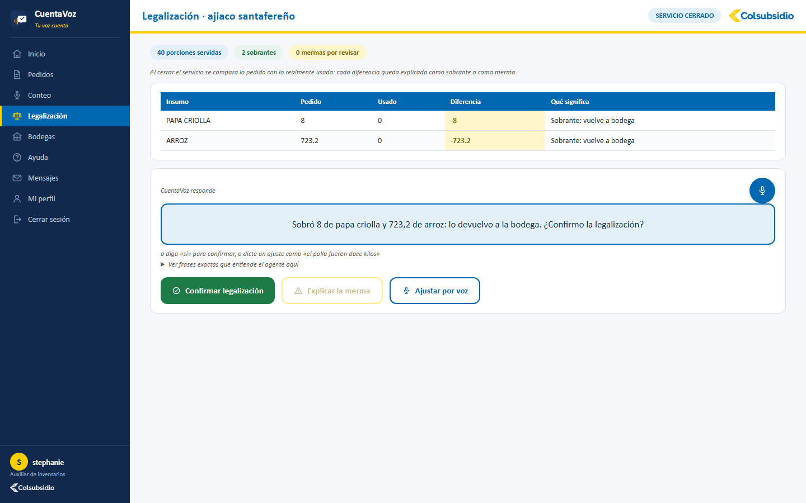
Figura 9Legalización del servicio, con sobrante y merma del turno.
7Bodegas
El estado de cada zona en vivo, y dónde está cada artículo.
Muestra el estado en vivo de cada bodega — pendiente, en conteo, en auditoría o cerrada — y se actualiza sola cuando alguien abre o cierra una, sin recargar la página.
Ver cómo va una bodega
Entre a Bodegascada zona es una tarjeta, con su estado en color y su porcentaje de avance.
Toque la tarjetase abre el detalle: cuántas referencias tiene, quién la está contando y las alertas que quedaron.
Buscar dónde está un artículo
Use el buscador de arribaescriba el nombre — arroz — o toque el micrófono y pregunte: ¿cuánto arroz hay y en qué bodegas?
Lea el resultadosale cuánto hay de ese artículo y en qué zonas está repartido.
Profundice si necesitaVer movimientos muestra su historia en el tiempo; Comparar con la receta, en qué platos entra.
Registrar una bodega que no existe
Toque «Bodega nueva»y escriba el nombre como aparece en el sitio.
Envíelaqueda pendiente de aprobación del administrador. Usted puede seguir trabajando; no hay que esperar.
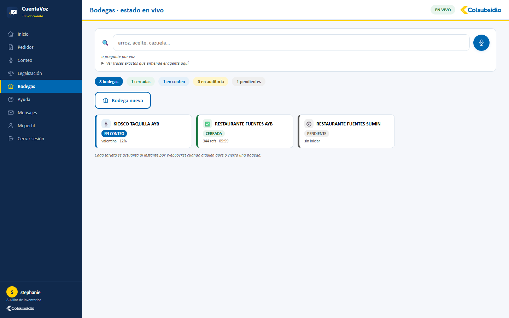
Figura 10Bodegas. Desde aquí también se solicita una bodega nueva que no esté en el catálogo.
8AuditoríaAdministrador
El control de calidad de la toma física: recuento ciego, cierre con doble firma y las bandejas de aprobación.
Recuento ciego y cierre
El administrador recuenta una bodega sin ver los números del auxiliar. Solo al terminar se revela la comparación — y ahí es donde la segunda pasada vale algo: si viera el primer número, lo confirmaría sin pensar.
Entre a Auditoríay quédese en la pestaña Recuento ciego y cierre.
Elija la bodegade las que están listas para auditar.
Toque «Iniciar recuento ciego»y cuente igual que en Conteo: dictando, o por teclado. No verá ningún número del conteo anterior.
Toque «Ver comparación»al terminar. Ahí aparecen las tres columnas: lo que dice el sistema, lo que contó el auxiliar y lo que contó usted.
Firme la auditoríaen Cerrar con doble firma verá las dos tarjetas: la del auxiliar y la suya. Toque Firmar la auditoría en la suya.
Cierre la bodegael botón Cerrar bodega definitivamente se activa solo cuando las dos firmas están puestas. La bodega queda cerrada y ya no se puede contar sin reabrirla.
Si el botón de cerrar sigue apagado
Falta una de las dos firmas. Mire las tarjetas: la que diga Pendiente de su firma es la que falta. Si es la del auxiliar, nadie puede ponerla por él — tiene que entrar a Conteo y tocar Terminar y firmar mi conteo.
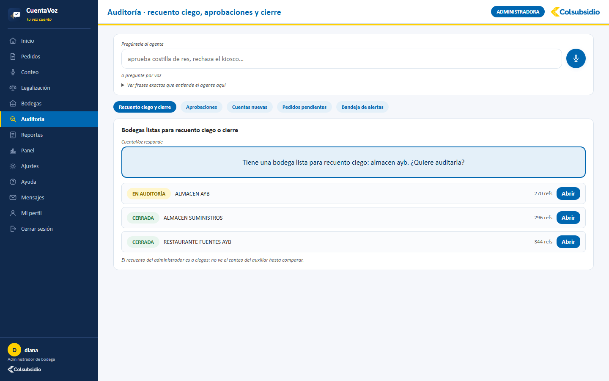
Figura 11Recuento ciego. La comparación solo se revela al finalizar.
Aprobaciones
Productos y bodegas que un auxiliar creó durante la toma porque no existían en el catálogo. Al aprobarlos entran al catálogo oficial con su código definitivo; el conteo asociado deja de estar marcado como pendiente.
Abra la pestaña «Aprobaciones»cada tarjeta dice quién lo creó, a qué hora y con qué cantidad.
Revise que sea realque el nombre corresponda a algo que de verdad existe en la bodega, y no a un error de dictado.
Apruebe o rechaceal aprobar entra al catálogo. Al rechazar no se borra nada: queda marcado como rechazado, con su nombre.
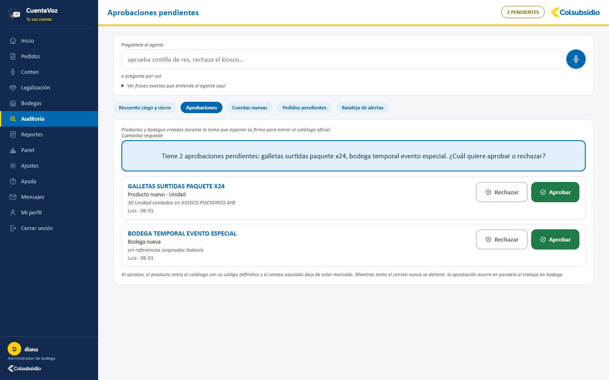
Figura 12Aprobaciones. El conteo en bodega nunca se detiene esperando esta firma.
Pedidos pendientes y bandeja de alertas
Los pedidos de los auxiliares esperan aquí su aprobación antes de salir del almacén. La bandeja de alertas reúne las diferencias que quedaron marcadas durante el conteo.
Pedidos pendientescada tarjeta trae el plato, las porciones y los insumos. Aprobar lo autoriza a salir del almacén; Rechazar lo devuelve.
Bandeja de alertaslas diferencias vienen agrupadas por tipo. Toque Ver en una para conocer su motivo exacto.
Resuélvalasi el número contado es correcto, se confirma y la alerta se cierra. Si no, se pide recontar esa referencia.
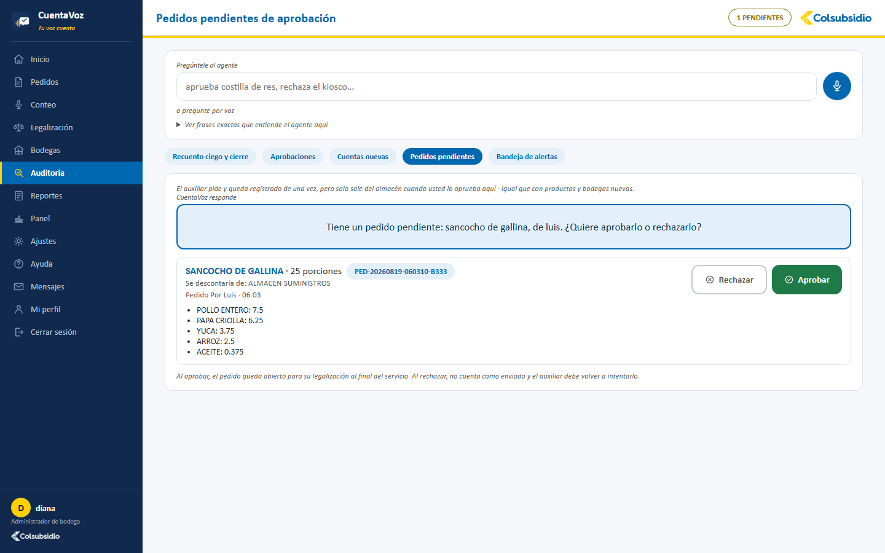
Figura 13Pedidos pendientes. Se autoriza antes de que salga del almacén.
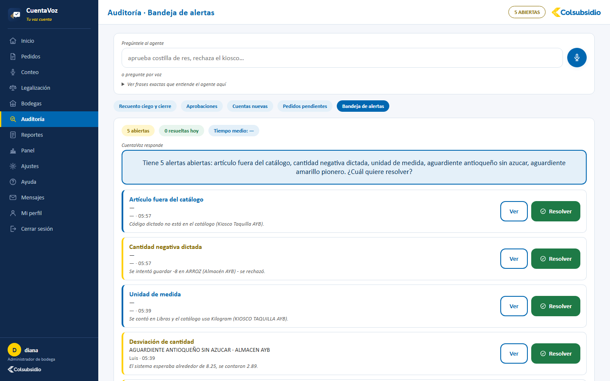
Figura 14Bandeja de alertas, agrupada por tipo de diferencia.
9ReportesAdministrador
La salida hacia My Inventory, y el análisis de lo que se consume.
La pantalla de Reportes tiene dos pestañas: Consolidado de la toma, donde se generan el archivo para My Inventory y el de diferencias, y Análisis de consumo, con el sobrepedido frente a la receta y la recomendación del agente. Dele clic a un archivo ya generado para verlo en pantalla antes de descargarlo y no bajar el equivocado.
Entre a Reportesen la pestaña Consolidado de la toma.
Toque «Generar consolidado»o Generar diferencias, según lo que necesite. El archivo aparece en la lista de abajo con su fecha y su número de filas.
Dele clic al archivopara verlo en pantalla, en el panel de la derecha, antes de bajarlo.
Descárguelosolo cuando confirmó que es el que quería. Ese es el archivo que se carga a My Inventory.
Hay otras tres salidas que no viven aquí sino en la pantalla a la que pertenecen: el estado del tablero y el detalle de una bodega se exportan desde Bodegas, y el registro de trazabilidad desde Ajustes › Registro de trazabilidad.
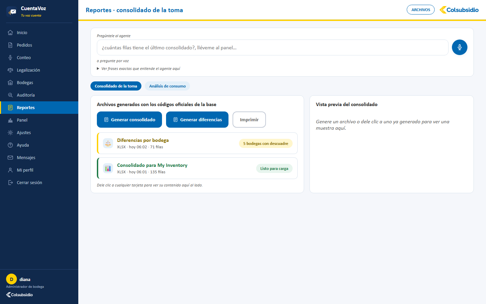
Figura 15Reportes. La previsualización evita descargar un archivo equivocado.
10PanelAdministrador
La vista de arriba: qué tan bien va la toma y qué zona revisar primero.
La vista gerencial. No se toca nada aquí: es para mirar y decidir. Tiene dos pestañas:
Pestaña
Qué muestra
Resumen ejecutivo
Exactitud de primera pasada, referencias contadas, alertas gestionadas y la gráfica de diferencia absoluta por bodega.
Bodegas y alertas
Los saldos negativos y las alertas agrupadas por tipo, para decidir con datos qué zona revisar primero.
Cómo se lee
Mire primero la exactitud de primera pasadaes el porcentaje de referencias que quedaron bien contadas sin necesidad de recontar. Si baja, algo está fallando en la toma, no en el inventario.
Después, la gráfica de diferencia absoluta por bodegala barra más larga es la zona donde más se aleja lo contado de lo que dice el sistema. Ahí es donde conviene mirar primero.
Cambie a «Bodegas y alertas»para ver qué tipo de diferencia predomina: si son saldos negativos, si son unidades distintas, si son productos que no estaban en el catálogo.
Actúe desde Auditoríael Panel dice dónde mirar; el recuento ciego y la bandeja de alertas son donde se resuelve.
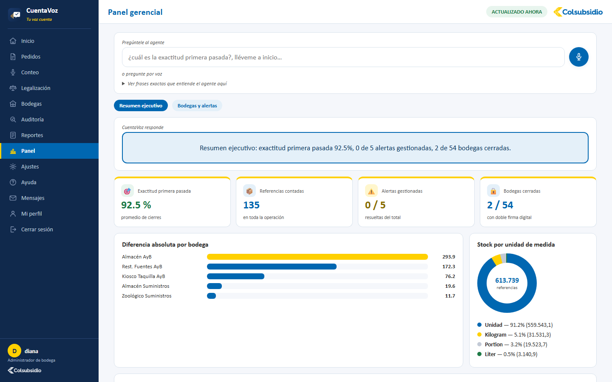
Figura 16Panel · Resumen ejecutivo.
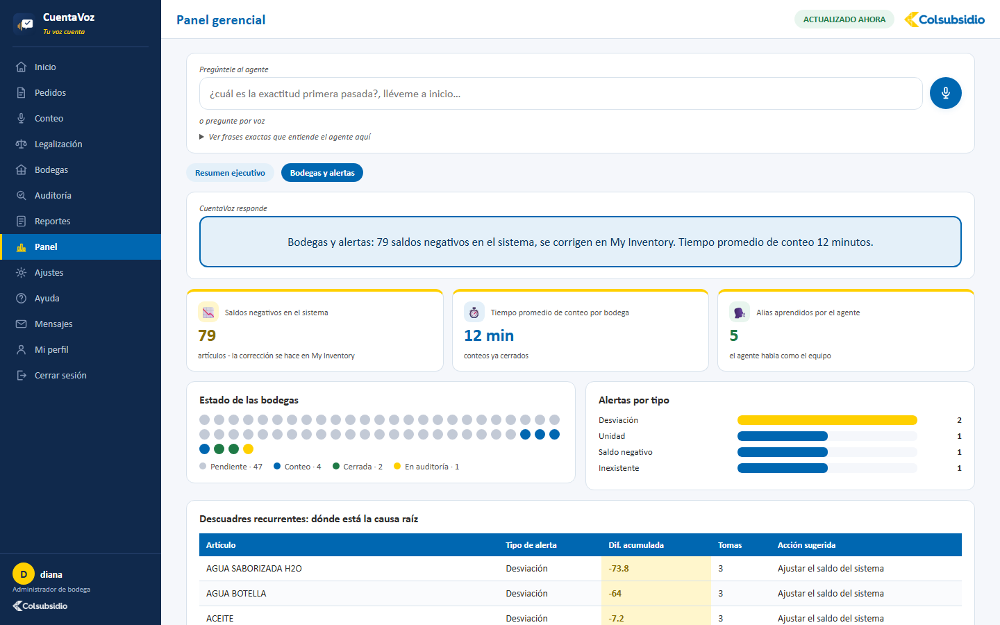
Figura 17Panel · Bodegas y alertas, la segunda pestaña.
11AjustesAdministrador
Configuración, usuarios, recetas y el registro de todo lo que pasó.
Pestaña
Para qué sirve
Configuración
Umbral de anomalía (qué tan grande debe ser una diferencia para disparar alerta) y modo sin conexión.
Gestión de usuarios
Crear personas, editar correo o perfil, activar o desactivar cuentas y asignar bodegas.
Recetas
Mantener el catálogo de platos y sus ingredientes, base del cálculo de pedidos.
Trazabilidad
Registro completo de quién hizo qué y cuándo, exportable.
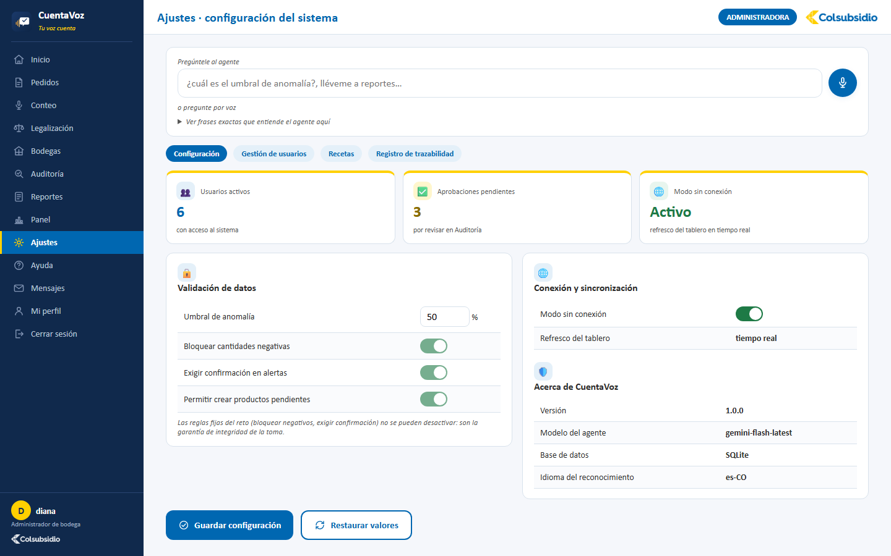
Figura 18Ajustes. Solo visible para el perfil de administrador.
Crear una cuenta para alguien
Entre a «Gestión de usuarios»y toque + Nuevo usuario.
Llene los datosnombre, usuario, correo y perfil. El perfil decide qué ve esa persona en el menú.
Guardela persona ya puede entrar. Si se registró ella misma y le quedó el perfil equivocado, aquí mismo se le cambia con Editar.
Asignar bodegas a un auxiliar
Es el paso que más se olvida, y sin él la persona no puede contar nada.
Busque a la personaen Gestión de usuarios.
Toque «Asignar bodegas»y marque las zonas que le corresponden.
Guardedesde ese momento las ve en Conteo. Si no le asigna ninguna, su pantalla de Conteo aparece vacía y no es un error.
Mantener una receta
Entre a la pestaña «Recetas»y toque Editar en el plato, o + Nueva receta.
Ajuste los ingredientescantidad por porción y unidad. De ahí sale el cálculo de los pedidos: si la receta está mal, el pedido sale mal.
Guardeel cambio aplica desde el siguiente pedido.
Consultar quién hizo qué
Entre a «Registro de trazabilidad»sale todo en orden, de lo más reciente a lo más antiguo.
Filtrepor persona, por acción o por fecha. Los reportes de soporte están bajo la acción SOPORTE.
Exporte si necesitael botón de exportar baja el registro completo como archivo.
Asignación de bodegas
Cada persona solo ve y solo puede trabajar las bodegas que le fueron asignadas. Esta restricción se aplica también al buscador y al agente de voz, no únicamente al menú.
Si a un administrador no le asigna ninguna bodega, alcanza todas — es el administrador general. Si le asigna algunas, queda a cargo de esas y solo esas: útil el día que haya varias sedes y cada una tenga su responsable.
12Ayuda
Dónde resolver una duda sin salir de la aplicación.
Reúne las preguntas frecuentes, la guía de frases que el agente entiende, un cuadro para preguntarle cualquier cosa por escrito o por voz, y el estado del sistema en vivo (API, datos de inventario y agente). Arriba a la derecha está Ver el recorrido en video, que vuelve a abrir el recorrido narrado de su perfil cuando quiera.
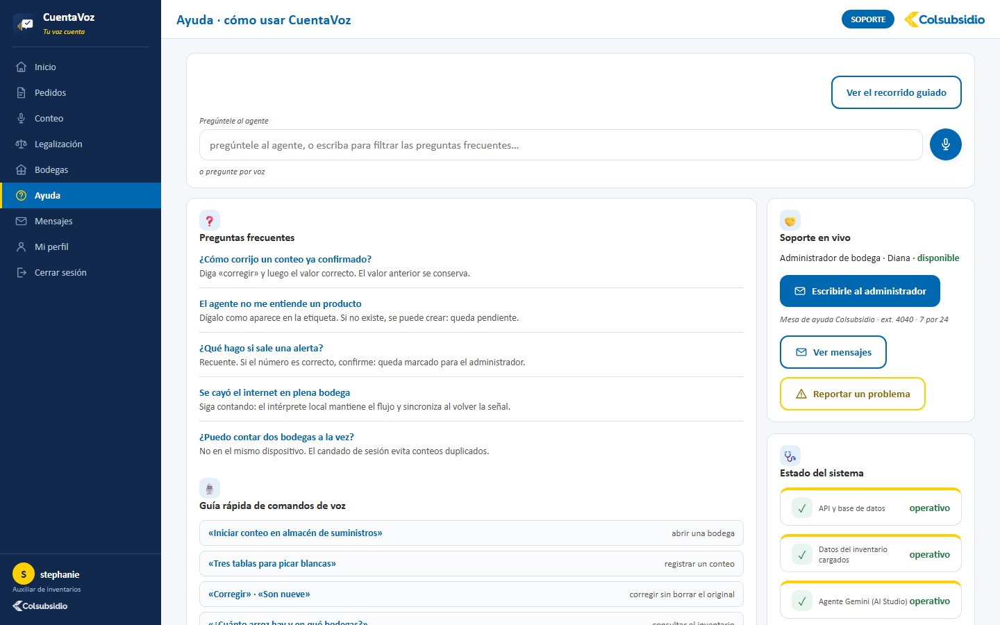
Figura 19Ayuda. El agente responde con los datos reales de la pantalla en la que está.
A la derecha, en Soporte en vivo, hay tres botones que hacen cosas distintas y conviene no confundir:
Botón
Cuándo usarlo
Escribirle al administrador
Cuando necesita algo de la operación: que le asignen una bodega, autorizar un pedido, resolver una diferencia.
Reportar un problema
Cuando lo que falla es la aplicación: el micrófono no responde, una pantalla no carga, un número sale mal.
Ver mensajes
Lo lleva directo a su bandeja, para ver si ya le respondieron.
Escribirle al administrador
Toque «Escribirle al administrador»el nombre de quien está de turno aparece arriba del botón.
Cuente qué necesitapuede dictarlo con el micrófono del cuadro o escribirlo.
Toque «Enviar»el mensaje queda en su bandeja y en el registro de trazabilidad, y CuentaVoz intenta además mandarle un correo al administrador.
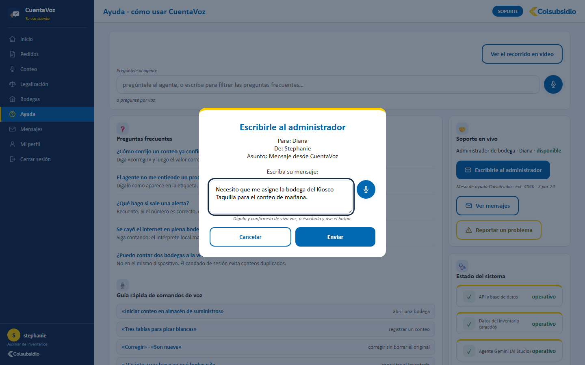
Figura 20Escribirle al administrador. El cuadro admite dictado por voz.
Qué pasa de verdad con el correo
Lo que siempre ocurre es que el mensaje queda guardado en la bandeja de los dos y en el registro de trazabilidad. El correo depende de cómo esté configurado el servidor: si tiene el servicio de envío activo, sale un correo automático y la pantalla dice «Correo enviado a…»; si no, CuentaVoz abre el correo del propio dispositivo con el mensaje listo y dice «Mensaje registrado. Se abrió su correo para enviarlo a…». En cualquiera de los dos casos, el administrador lo ve al entrar a Mensajes.
Reportar un problema
Toque «Reportar un problema»en el recuadro de Soporte en vivo.
Describa qué pasócon sus palabras. Entre más concreto (en qué pantalla, qué estaba haciendo), más fácil es resolverlo.
Toque «Enviar»el reporte queda registrado con su nombre y la hora.
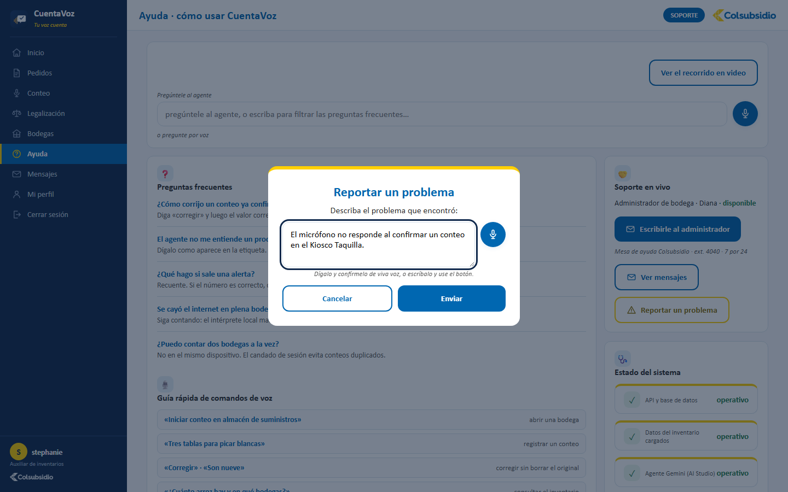
Figura 21Reportar un problema. Queda en el registro de trazabilidad con su nombre y la hora.
Dónde queda el reporte
En el registro de trazabilidad, marcado como alerta. El administrador lo consulta desde Ajustes › Registro de trazabilidad, filtrando por la acción SOPORTE. El reporte guarda exactamente el texto que usted escriba: no adjunta la pantalla ni captura nada por su cuenta, así que vale la pena decir dónde estaba.
Volver a ver el recorrido en video
El recorrido narrado de su perfil no hay que buscarlo ni pedirlo: vive en esta misma pantalla, arriba a la derecha.
Entre a Ayudadesde el menú de la izquierda.
Toque «Ver el recorrido en video»arriba a la derecha, sobre el cuadro del agente.
Véalo cuando quierapuede pausarlo, cerrarlo y volver más tarde. Se abre el de su perfil: el de auxiliar de inventarios o el de administrador de bodega, según su cuenta.
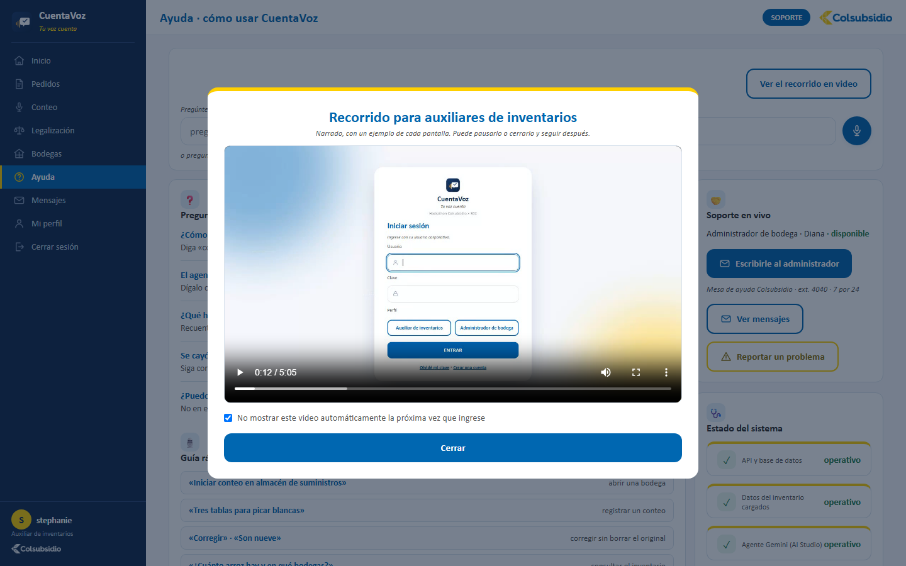
Figura 22El recorrido, reabierto desde Ayuda › Ver el recorrido en video.
Si lo desactivó al ingresar
Marcar No mostrar este video automáticamente solo evita que se abra solo al entrar. El botón de Ayuda lo sigue abriendo siempre que usted quiera, y sirve igual para mostrárselo a alguien que acaba de llegar al equipo.
13Mensajes
Su bandeja con el equipo, sin correos por fuera.
Su bandeja con el equipo. Arriba hay tres contadores, y dicen cosas distintas según quién mire:
Contador
Auxiliar de inventarios
Administrador de bodega
Primero
Mensajes enviados
Mensajes recibidos
Segundo
Esperando al administrador
Por responder
Tercero
Ya le respondieron
Ya resueltos
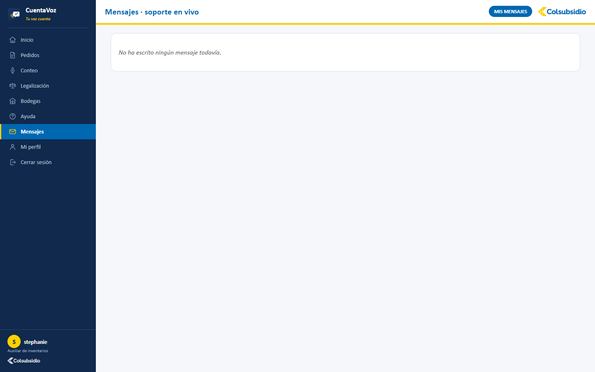
Figura 23Mensajes. Para el auxiliar: lo que escribió y si ya le contestaron.
Escribirle al administrador
Desde Mensajes se lee lo que hay; para escribir se pasa por Ayuda, que es donde está el botón.
Entre a Ayuday busque el recuadro Soporte en vivo, a la derecha.
Toque «Escribirle al administrador»arriba del botón aparece el nombre de quien está de turno.
Cuente qué necesita y envíepuede dictarlo o escribirlo.
Vuelva a Mensajescon el botón Ver mensajes o desde el menú. Ahí lo verá como pendiente hasta que le respondan.
Responder un mensajeAdministrador
Entre a Mensajeslos pendientes salen marcados en amarillo como pendiente.
Toque «Responder»debajo del mensaje. Se abre un cuadro con el mensaje original a la vista, para no responder de memoria.
Conteste dictando o escribiendoy toque Enviar.
Si hay un solo mensaje pendiente, arriba aparece además Responder por voz: lo que dicte ahí se usa directo como respuesta, sin abrir el cuadro.
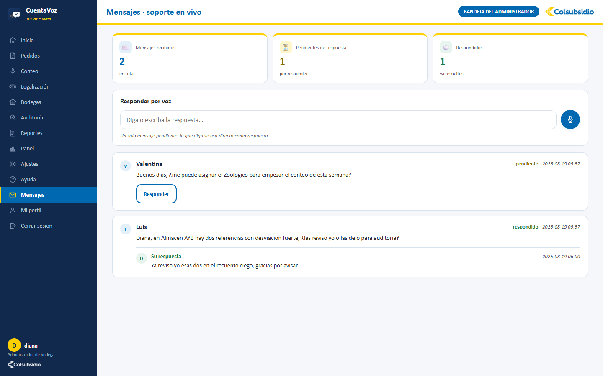
Figura 24La misma bandeja vista por el administrador, con el botón Responder.
Un mensaje se responde una sola vez
Si dos personas (o dos pestañas abiertas) intentan responder el mismo mensaje, la segunda recibe un aviso de que ya fue respondido en vez de pisar la respuesta anterior en silencio. Quien preguntó ve la respuesta en su propia bandeja.
14Mi perfil
Su clave, la verificación en dos pasos, la voz y la accesibilidad.
Seguridad de la cuenta
Cambiar la clave — se pide la clave vigente. CuentaVoz nunca ve ni almacena su clave: la administra el servicio de identidad.
Verificación en dos pasos — activarla o desactivarla en cualquier momento.
Cerrar sesión en todos los dispositivos — útil en tabletas compartidas entre varios turnos.
Aviso de vencimiento — CuentaVoz le recuerda cambiar la clave cuando está por vencer.
Figura 25Mi perfil. Datos personales, seguridad y preferencias de voz.
Cambiar la clave
Entre a Mi perfily busque el recuadro Seguridad de la cuenta.
Toque «Cambiar clave»se le pide la clave vigente y la nueva dos veces, con los mismos cuatro requisitos del registro.
Guardela sesión actual sigue abierta. Si sospecha que alguien más la sabía, use además Cerrar sesión en todos los dispositivos.
Accesibilidad
Si trabaja en una bodega con poca luz, o le cuesta leer la pantalla, se ajusta aquí y queda guardado en ese equipo.
Baje hasta «Accesibilidad»al final de Mi perfil.
Active «Alto contraste»los colores se oscurecen y el texto resalta más.
Suba el tamaño de letracon el selector de al lado: Normal, Grande o Más grande.
Listoel cambio se aplica al momento y se recuerda la próxima vez que entre en ese mismo equipo.
Al final de Mi perfil encontrará dos ajustes que se aplican de inmediato, sin necesidad de guardar:
Alto contraste — refuerza los colores y los bordes para bodegas con iluminación difícil.
Tamaño de letra — normal, grande o más grande, para toda la aplicación.
Son preferencias del equipo donde está trabajando, así que se mantienen aunque cierre sesión y funcionan también sin conexión.
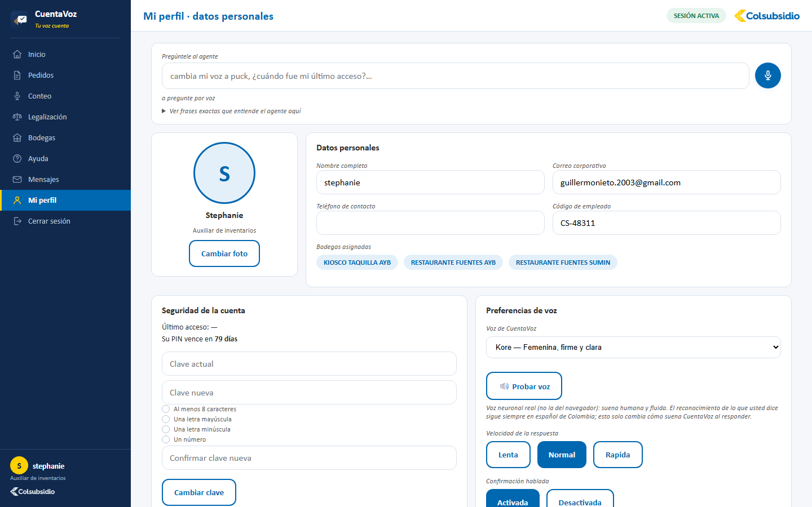
Figura 26Accesibilidad. Disponible para todos los perfiles.
15Cerrar sesión
Salir sin dejar nada a medias.
Es la última opción del menú. Antes de dejarlo salir, CuentaVoz revisa si dejó una bodega abierta y se lo dice con cuántas referencias lleva contadas, para que nadie se vaya con la duda de si perdió el trabajo. Lo registrado ya está guardado y la próxima vez que entre continúa donde iba.
Toque «Cerrar sesión»al final del menú de la izquierda.
Lea el avisosi tiene una bodega abierta, ahí lo dice. Puede tocar Seguir trabajando y no pasa nada.
Confirmela sesión se cierra también del lado del servidor, no solo en ese navegador: en una tableta que se pasan entre turnos, eso evita que alguien siga usando la sesión de otro.
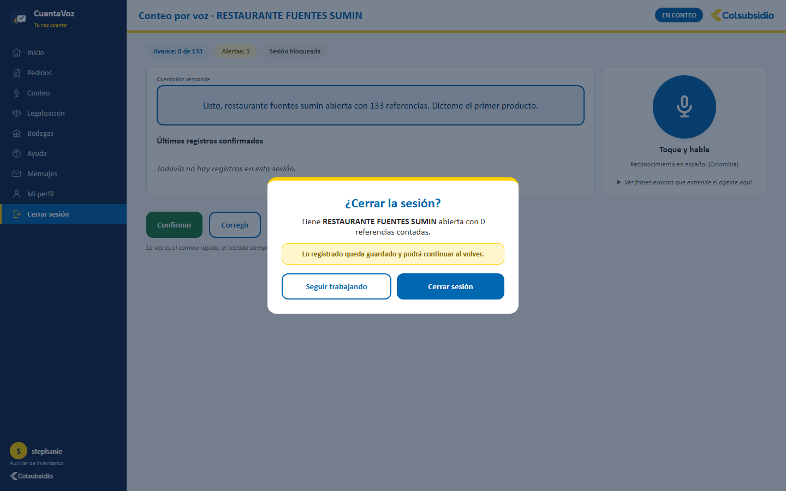
Figura 27Cerrar sesión avisa si quedó trabajo abierto antes de salir.
16Preguntas frecuentes
Lo que más se pregunta en la operación.
Situación
Qué hacer
El agente no entiende un producto
Dígalo como aparece en la etiqueta. Si no existe en el catálogo, se puede crear y queda pendiente de aprobación.
Se cayó el internet
Siga contando por teclado. Se sincroniza solo al volver la señal (sección 5).
Salió una alerta
Recuente. Si el número es correcto, confírmelo: queda marcado para el administrador.
Contar dos bodegas a la vez
No es posible en el mismo dispositivo. El candado de sesión evita conteos duplicados.
No veo el menú de Auditoría
Esa sección es exclusiva del perfil de administrador de bodega.
Corregir un conteo ya confirmado
Diga corregir y el valor correcto. El anterior se conserva.
Olvidé mi clave
Olvidé mi clave en la pantalla de ingreso. Llega un código de seis dígitos al correo registrado (sección 2).
Le escribí al administrador y no responde
Revise Mensajes: si sigue en pendiente, aún no lo ha contestado. Para algo urgente, la mesa de ayuda de Colsubsidio, ext. 4040.
Quiero volver a ver el recorrido en video
Ayuda › Ver el recorrido en video, arriba a la derecha.
CuentaVoz · Tu voz cuenta
Manual de usuario, versión 2.0 — agosto de 2026. Elaborado por el equipo StockXperts para la operación de bodegas de Colsubsidio.
Soporte
Use Ayuda › Reportar un problema dentro de la aplicación: queda registrado con su nombre y la hora, y el administrador lo ve en el registro de trazabilidad. Para algo que se salga del alcance del equipo, la mesa de ayuda de Colsubsidio atiende en la ext. 4040, 7 por 24.